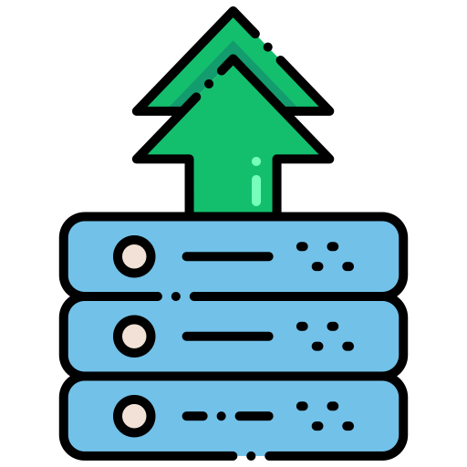

Empaqueta, despliega y escala sin límites. Con Docker, lleva tus aplicaciones a cualquier lugar.
¿Qué es docker?
Docker es una plataforma de código abierto que permite desarrollar, enviar y ejecutar aplicaciones en contenedores. Un contenedor es una unidad ligera y portátil que incluye todo lo necesario para que una aplicación funcione, desde el código y las librerías hasta las configuraciones necesarias. Esto asegura que las aplicaciones se ejecuten de manera consistente sin importar el entorno en el que se desplieguen, ya sea en un servidor local, en la nube o en diferentes sistemas operativos

Beneficios
Docker ha transformado la forma en que los desarrolladores crean, despliegan y administran aplicaciones, ofreciendo una serie de ventajas que optimizan tanto el desarrollo como la operación. Desde la portabilidad hasta la eficiencia en recursos, Docker permite a los equipos trabajar de manera más ágil y efectiva. A continuación, te presentamos los principales beneficios que Docker aporta a tu flujo de trabajo y operaciones.

|
PortabilidadDocker garantiza que las aplicaciones funcionen de manera consistente en cualquier entorno, eliminando problemas de compatibilidad. |
|  |
EscalabilidadDocker facilita la creación y administración de múltiples contenedores, lo que permite escalar aplicaciones con facilidad. |
Eficiencia en RecursosLos contenedores Docker son ligeros, lo que permite un uso más eficiente de recursos en comparación con las máquinas virtuales. |
|
Integración con CI/CDDocker se integra fácilmente en pipelines de integración continua (CI) y entrega continua (CD), mejorando la automatización. |
|

|
FlexibilidadDocker soporta diversas plataformas, permitiendo que los desarrolladores trabajen con diferentes tecnologías y frameworks |

|
SeguridadLos contenedores proporcionan un entorno seguro al aislar aplicaciones, limitando los riesgos de seguridad |